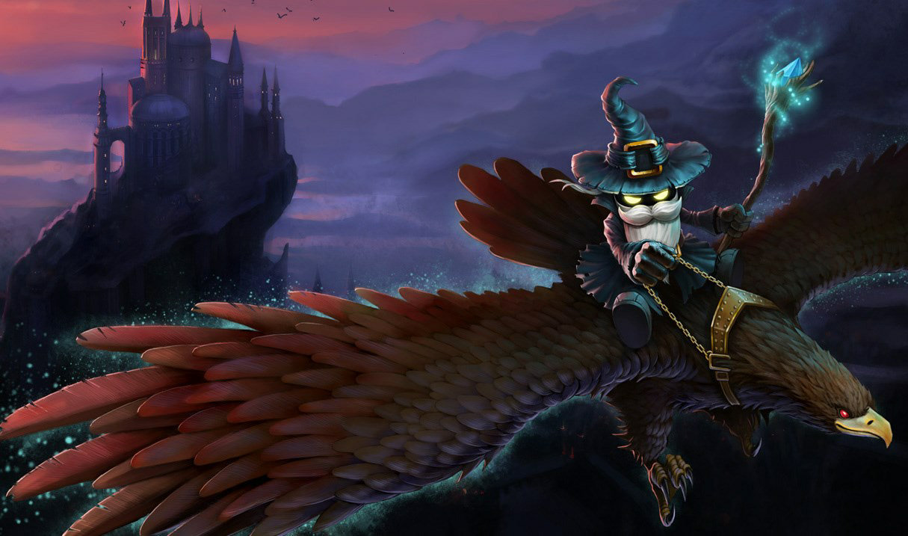
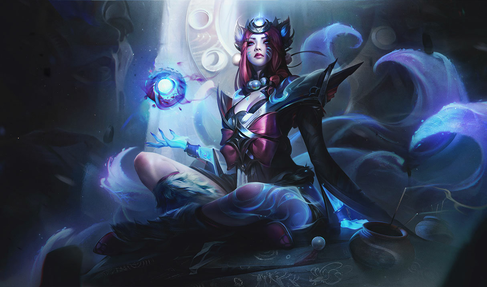
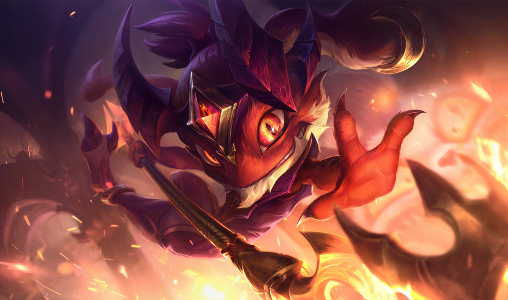

La línea central del mapa, perfecta para campeones que tengan ataques de rango. Suele ir un solo campeón con unas estadísticas que no necesite de objetos extra para hacer daño, sino que eche mano de su nivel principalmente. Al estar solo en la línea, conseguirá experiencia más rápidamente que los demás personajes, lo que ofrecerá una ventaja importantísima para su equipo.

Entusiasta maestro de la magia negra, Veigar ha hecho suyos poderes a los que pocos mortales se atreven a acercarse. Como espíritu de Ciudad de Bandle, buscó durante mucho tiempo deshacerse de las limitaciones de la magia yordle, así que su atención se posó sobre unos textos arcanos que habían estado escondidos durante siglos. Ahora, dada su terquedad y su curiosidad infinita por los misterios del universo, Veigar es menospreciado a menudo pero, aunque él se ve a sí mismo como una fuerza del mal, posee una moral interior que lleva a algunos a cuestionar sus motivaciones ulteriores.

Ahri es una raposa vastaya conectada de forma innata a la magia del reino de los espíritus. Es capaz de manipular las emociones de su presa antes de consumir su esencia, proceso que le transmite los recuerdos de cada alma que consume. Otrora una poderosa pero incontrolable depredadora, Ahri ahora viaja por el mundo en busca de vestigios de sus antepasados mientras intenta reemplazar los recuerdos robados por otros propios.

Fizz es un yordle anfibio que habita entre los arrecifes de alrededor de Aguas Estancadas. Suele recuperar y devolver los diezmos arrojados al mar por capitanes supersticiosos, pero incluso los marineros más agudos saben que no hay que plantarle cara, puesto que hay muchas historias que hablan sobre aquellos que han subestimado a este ser resbaladizo. A menudo lo confunden con algún tipo de espíritu caprichoso del océano. Parece ser capaz de dominar a las bestias de las profundidades y se deleita en confundir a sus aliados y a sus enemigos por igual.